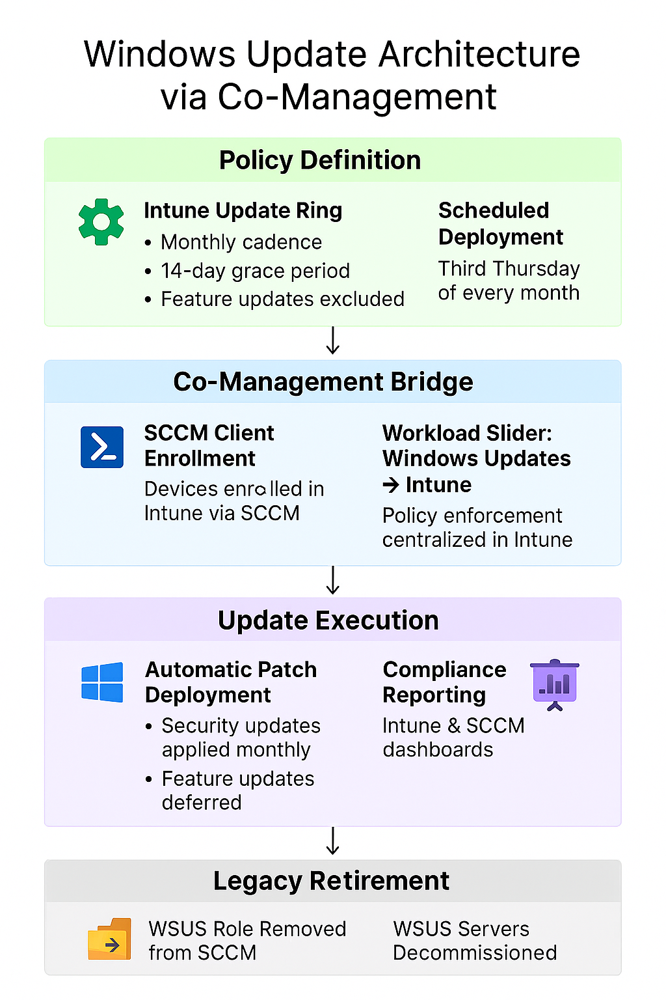

Challenge
Our organization needed a unified patching strategy that ensured monthly compliance with security updates while avoiding untested feature upgrades. The solution had to support hybrid environments and leverage existing SCCM infrastructure while transitioning to modern Intune-based policy management.
Tools & Technologies
- Microsoft Intune (Update Rings)
- System Center Configuration Manager (SCCM)
- Co-Management (Windows Update workload slider)
- Windows Update for Business
- Group Policy & Intune Reporting
Implementation
- Created Intune Update Ring with monthly cadence and 14-day grace period
- Excluded feature updates to prevent untested OS upgrades
- Enabled co-management and moved Windows Update workload to Intune
- Validated SCCM client health and Intune enrollment across endpoints
- Scheduled update deployment for the third Thursday of each month
- Deprecated WSUS servers and removed WSUS role from SCCM
- Monitored compliance via Intune and SCCM reporting dashboards
Update Flow Diagram
Impact
- Achieved consistent monthly patch compliance across hybrid endpoints
- Reduced risk exposure by excluding untested feature updates
- Streamlined update management by centralizing policy in Intune
- Retired legacy WSUS infrastructure and simplified patching architecture